Every picture here is the real dashboard on an invented family. Open the same dashboard, read-only, and click around.
A tour of the dashboard
Every picture below is the real dashboard, captured by make screenshots against
the demo lineage: an invented family, invented recordings (spoken
by the computer) and invented records on example.org. No real family appears.
Sources: everything the family has, in one place
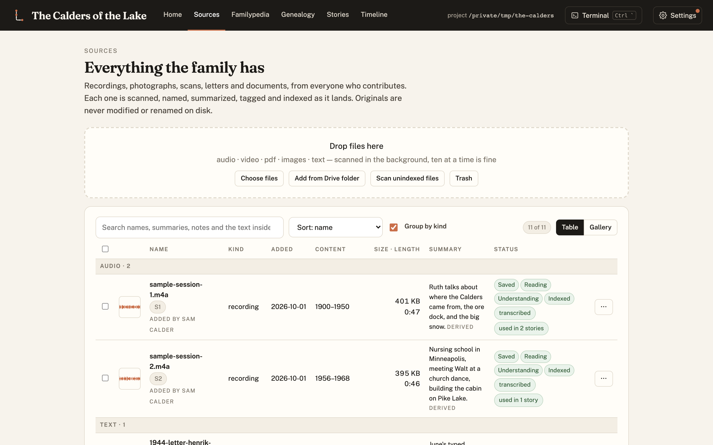
Recordings, scans, letters and documents, each scanned, named, summarized and indexed as it lands, with who added it and when. Recordings get transcripts with speaker labels and timestamps, so every sentence later can point back at the tape.
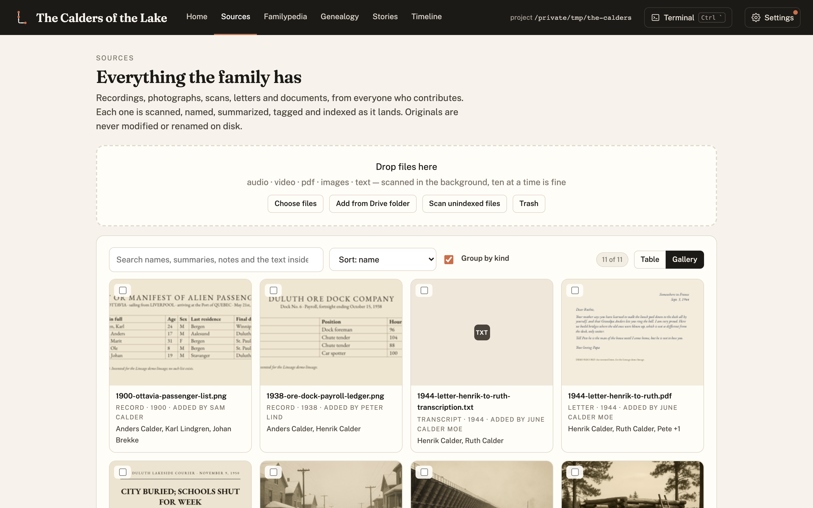
The same sources as a gallery: scans, letters and photographs at a glance, with who added each one. Select several and tag them all to a person, a place or a ship at once.
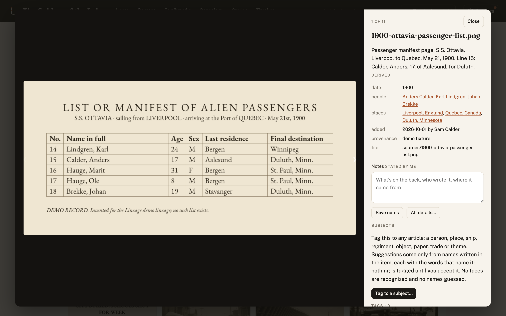
Click one to see it full size, step through the rest with the arrow keys, and read or edit its summary, people, places, provenance and notes beside it.
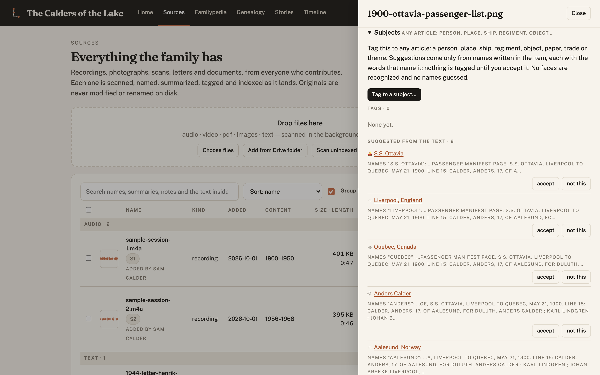
Open a source and everything about it is editable, and everything derived is marked as derived. Subjects tags it to any article (a person, a place, a ship, a regiment, an object). Suggestions come only from names written in the item, with the words that name them, and nothing is tagged until someone accepts it. No faces are recognized and no names guessed.
Familypedia: an article for everything the material names

A person's article. The lead is written from the material. The infobox comes from the records. Below it, what was witnessed, what was told, what is family lore, and what the records show, each line with its citation. Here the family says Anders crossed at sixteen and the manifest says seventeen, and the article keeps both.
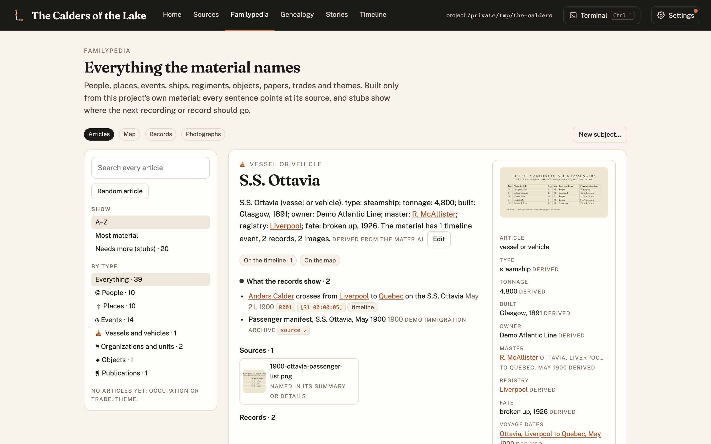
A ship gets the same treatment: type, tonnage, builder, owner, master, registry and fate from the records; its voyages, its ports (each an article of its own) and the people aboard; the records that document it and the sources that mention it. People, places, events, organizations and units, objects, publications, occupations and themes all work this way.
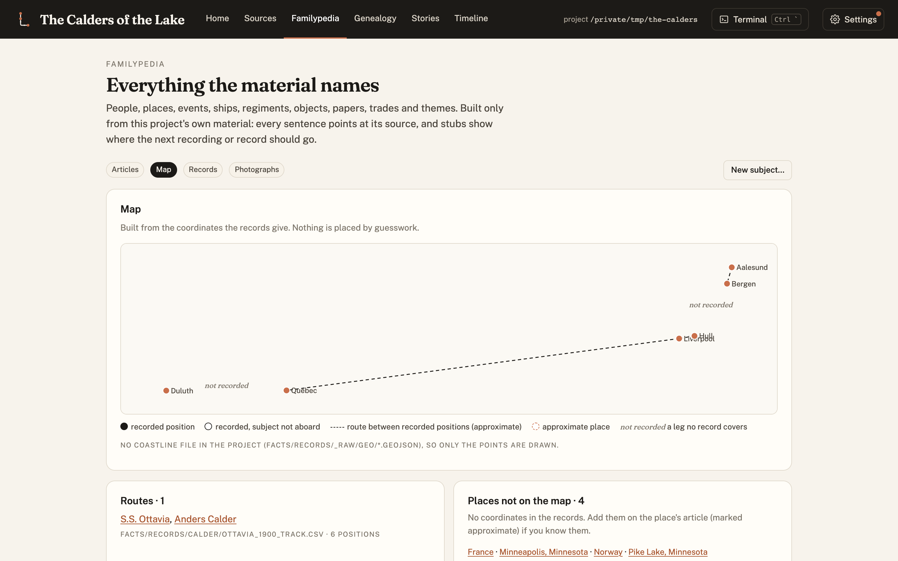
The map is drawn from the coordinates the records give, with the same evidence coding as a book's maps: recorded positions solid, the track between them dashed, and any leg no record covers labelled not recorded rather than drawn.
Genealogy: built from evidence

The tree is rebuilt from the sources, and every link points at the words or the record that establish it. A link without evidence isn't drawn; a person nobody can place stays unattached and is listed. Walt's surname is never said on the tape, so the tree doesn't give him one. It exports to GEDCOM and imports from it.
Timeline: what happened, and how sure we are

Every dated event, oldest first, coloured by tier, with its citations, the people and places it touches, and a flag wherever the sources disagree. The gaps are part of the picture: each one can become a question for the next recording.
Stories: an export of the record
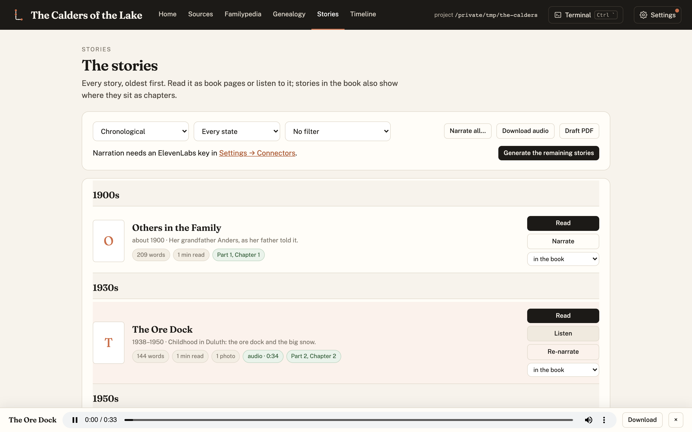
Stories are written from the record under strict rules (third person, quotes exact, every paragraph cited) and can be narrated. The player follows you around the dashboard.
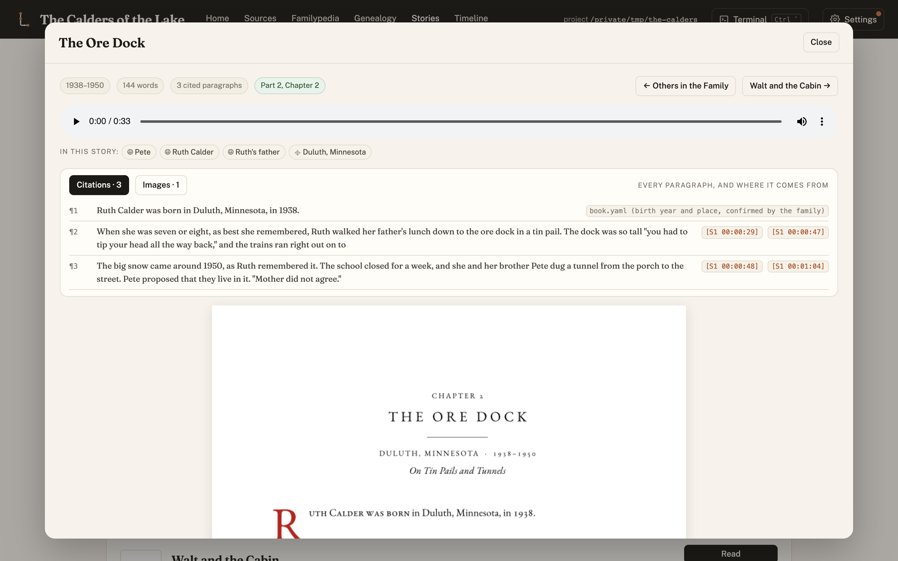
Read a story as the book's own pages, with what it rests on above them: every paragraph and its citation chips (click one to hear that moment of the recording, or open the record), and the people and places in it, each linked to their Familypedia article. A sentence the writer wanted to add that the material didn't give it is a bridge: highlighted in the draft, and the final build refuses to compile while one is unapproved.
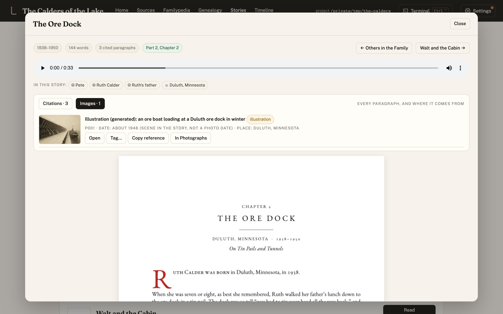
Each image in a story carries its provenance (its date and the basis for it, who is in it and how we know, who holds it) and a toolbar to open it, tag it or find it among the photographs. An illustration says so, everywhere.
Contributors and connectors
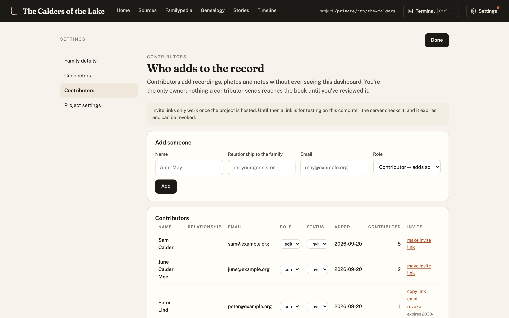
The people who add to the record: their role (contributor, reader, editor), what they've added, and invitations. Requests to relatives ("could you scan the other ten letters?") are drafted from what the record already flags as open.
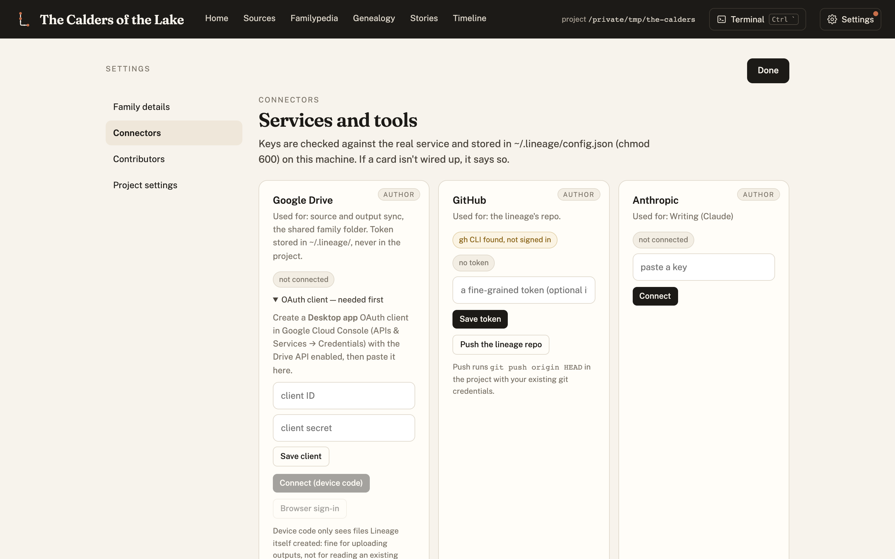
Keys stay on your machine (~/.lineage, readable only by you), never in the record. Google
Drive, GitHub, Anthropic, OpenAI, ElevenLabs, and the agent CLI the built-in terminal runs.
The book, and the narration
When the record is ready, a book falls out of it. Story units are cut from the transcripts, arranged on a chapter map, written under the style rules, set in Typst with front matter, a timeline, a records appendix and an index, and checked for print (KDP, IngramSpark, Lulu, Blurb). The same stories can be narrated for listening.
record ─► story units ─► chapter map ─► stories ─► book (PDF) and narration
content/ data/ chapters/ output/
▲ ▲
approve the map final sign-off
Story units are the trick. The transcript is cut into one file per story, each carrying its source excerpt and its written version, and chapters are generated from units. Moving a story is a one-line change and a rebuild, and a coverage check proves no part of the recordings got quietly dropped. Bridges are the other trick: anything added that the material didn't give is held for a person's approval, and the final build stops until it is.
Research is kept per chapter. Each chapter has a dossier: the author's requests for it, a log of every search (blocked ones too), every source found or scraped, the evidence for and against the family's version, and lessons learned. Every chapter ends with THE RECORDS, all of its sources, generated from the dossier and checked. A polite fetcher handles the records a script may reach; a hand-off list covers the ones only a person can look up.
The defaults come from a working book: two justified columns, one epigraph per chapter, chapters of at least ten pages (thin ones are combined, never padded), no "general knowledge" sources, a service-record method for anyone who served, a small three-generation family tree, an eight-panel illustrated story in the subject's own words, and illustrations generated in a period style with a relative's likeness locked from real photographs, marked as renderings in the book. When the author asks, a book swarm drafts the whole book in one pass (researchers, a writer, three editors and two judges per chapter) for them to read.
Your lineage uses Lineage; it doesn't contain it
A lineage (made with make new) keeps only its own material: recordings, transcripts,
sources, records, people, stories, photos. Everything else (skills, style, templates,
scripts, the dashboard) stays here and reaches the lineage as a release. The lineage pins the
release it runs in lineage.lock:
make lineage-version # what this lineage runs
make update-lineage # what a newer release would change, and which of your files it touches
make update-lineage APPLY=1 # install and pin it; stories it would alter are marked stale, never rewritten
make dashboard # the dashboard, on this lineage
Improvements found while working on one family's record come back here and reach every
lineage as a release. Things only one family would want stay in its local-overrides/.
The Factory
Lineage is one instance of a general pattern, and the repo ships the generator too: point it at a different kind of source material and it writes a new pipeline with the same guarantees (immutable sources, citations on every claim, evidence tiers, quarantined inventions, human gates, versioning). See docs/FACTORY.md.
/plugin marketplace add rexsaurus/Lineage
/plugin install lineage@lineage # the family record platform
/plugin install factory@lineage # the generator